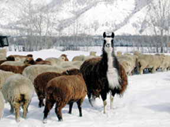
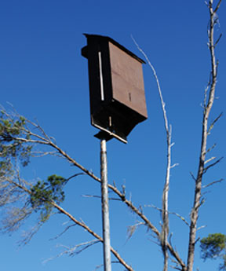
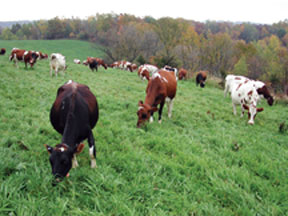
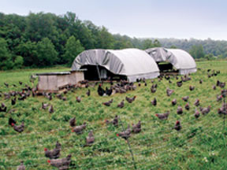
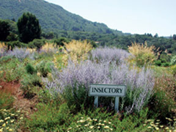

At first glance, the phrase “farming with the wild” may seem contradictory. Agriculture has been and remains the relentless process of selection and minimization, one that now blankets billions of the Earth’s acres with a mere handful of crops. Farming and ranching activities are consistently identified as the primary cause of wildlife habitat loss, the archenemy of the biodiversity crisis.
Throughout the millennia, agricultural domestication has largely been a dance of coevolution, with humankind playing a leading role as artificial selector and steward, among a full cast of essential and cooperative participants (including birds, insects, fellow mammals, grasses, food and fiber plants, and natural systems). As farms that combined row crops and livestock gave way to specialized factory-oriented monocultures at war with pests, diseases and weeds, ever larger machinery necessitated ever larger areas to operate. Habitat destruction and fragmentation, pollution of terrestrial and aquatic ecosystems, soil erosion, the persecution of predators and the overexploitation of nonrenewable resources are now among the many ecologically devastating consequences of modern industrial agriculture.
Forced to compete in a globally oriented food and fiber system, farmers have often had to forsake goals, such as wildlife preservation and long-term landscape conservation (as well as health-care and other basic needs), in favor of short-term economic survival. But with the proper incentives, assistance and resources, farmers can and should be encouraged to manage their lands more sustainably, and profitably, while protecting wildland values.
Farming with the wild is not a novel concept. Nineteenth and 20th-century American literature is replete with prophetic and philosophical writing that attempt to reconcile and redirect a civilization bent on the isolation or elimination of wildness from the broader culture. Henry David Thoreau’s Walden, John Muir’s The Mountains of California, Aldo Leopold’s A Sand County Almanac, Rachel Carson’s Silent Spring, and Wendell Berry’s The Unsettling of America spring readily to mind among the hundreds of works of extraordinary vision and insight. Within the sustainable agriculture movement itself, the idea that farms must be managed as natural systems gained considerable currency throughout the 20th century.
Today, a number of terms describe the move away from monoculture toward the more diverse crop systems of polyculture, from an emphasis on annuals to geographically appropriate perennial cropping systems: agroecology, regenerative agriculture, natural systems agriculture, grass farming, succession farming, permaculture, eco-agriculture and farming with the wild.
With this evolved thinking, a new vision for a more functionally integrated agriculture is emerging. Such a vision, however, will require new ways of looking at agriculture’s place on the landscape.
Building alliances between historical adversaries will no doubt require tearing down decades-old walls and stereotypes: Environmentalists, on the one hand, are often lumped with wealthy urbanites and bureaucrats who dispatch regulations from distant power centers. Farmers and ranchers, on the other hand, are frequently perceived as narrow-minded and steeped in a sense of entitlement.
What may in fact help to bring both camps together is a sense of unity in common goals and common foes. Common goals would include maintaining arable farmland within healthy rural communities, keeping rural lands open and free from subdivision and development, restoring native habitat on private and public lands, and creating a more natural urban-rural interface. Common foes might include land-exploiting agribusiness corporations, massive concentrated animal feedlot operations and global versus regional food systems.
At this crossroads early in the 21st century, we face a revolution of no small proportions in how our food and fiber will be produced and at what economic, social and biological costs. Farmers cannot be expected to shoulder the brunt of this burden. Ultimately, success must come through collaboration and the articulation of a new vision for agriculture: consumers who support local producers because they are protecting biodiversity; skilled ecologists who can point the way toward restoration; local resource conservation districts; and programs that promote and practice restoration in rural areas.
In simple terms, a farm should be as wild as it possibly can be while simultaneously accomplishing its goals of agricultural production. At the same time, no farm should break its social contract by degrading soils, polluting or depleting aquatic systems, or eliminating critical habitats upon which both the future of agriculture and biodiversity depend. Individuals and groups around the country are increasingly finding ways that farming and ranching operations and rural areas can directly benefit from the presence and proliferation of native species and habitat.
No farm can be “too wild.” Rather, a key management question will be whether a farm is “wild enough.” In other words, has the agricultural operation optimized the natural services of a healthy ecosystem that allow it to prosper? Pollinators and beneficial insects are absolutely critical for the long-term success of sustainable agriculture and are dependent on the presence of permanent vegetation. Barn owls, raptors, snakes and other predators help to control rodents that can cause crop losses. Fire has proved to be a valuable management tool in reinvigorating and improving the nutritional quality of grasslands and pastures, and in controlling shrubs and invasive weed species. Healthy riparian systems are essential for agriculture, protecting against floods, providing stable banks, clean water and habitat for fish and wildlife. Winter-flooded fields can become migratory waterfowl habitat while also reducing weed pressures. These are merely a few examples.
Models and examples of landowners, land trust organizations, government cost-share and incentive programs, third-party ecolabels, wildlife monitoring groups, nonprofits, and others working to achieve a balance between farming and ranching activities and the protection of the natural world have emerged throughout the country in the past few decades. Here are some systems that have proven to be mutually beneficial.
Wetland Enhancement and Restoration. In many states, where wetland loss is over 90 percent of pre-settlement conditions, even small drainage ponds and grassed waterways can provide critical habitat and resting areas for migratory waterfowl, and nesting and wintering habitat for others. Wetlands maintain water quality and help recharge the water table. The ability to absorb and filter runoff can prevent flooding and avoid further land disturbance. Efforts to restore marginal lands and essential wetland habitat across the landscape must continue to be a top priority throughout this century.
Wildlife Friendly Timing. Mowing, spraying and other disruptive activities can be timed to minimize impacts during critical breeding periods. High mowing or delayed mowing or grazing can be timed to respect the annual pulses of wildlife breeding, nesting and so on. Delayed harvests also can accommodate the hatching period for ground-nesting birds. When considering harvest and mowing schedules, farmers can save fields closest to wetland and riparian areas for last, because they often maintain the highest nesting densities. Grazing can be conducted when undesirable annuals are seeding in order to maximize the presence of perennials.
Corridors, Connectivity and Wildlands Networks. Wildlife corridors (unfragmented areas of land that allow wildlife the freedom to move throughout their territory) help to maintain ecologically viable food webs. Without allowing large predators, such as cougars and bears, the freedom to regulate populations of mid-sized mesopredators such as raccoons and skunks, there may be severe impacts to nesting birds, reptiles, aquatic species and others. California Fish and Game wildlife biologist Alan Buchman recommends that farmers avoid breaks across creeks and riparian corridors; fences that block wildlife access to creek corridors; or cultivating, grazing or other activities in riparian areas because these are invaluable wildways and habitat zones for many species. Vegetation buffers help to stabilize stream banks, reduce erosion and filter runoff. Riparian buffers should be as wide as possible to facilitate wildlife movement.
Conservation Tillage. Conservation tillage practices such as no-till, strip-till and shallow tillage that limit the cultivation of soil can help conserve soil biodiversity and moisture. (Some of these are currently dependent upon genetically modified crops and intensive herbicide use. Research is urgently needed on the development of organic conservation tillage practices.) Cover crops give fields rest and rotation, build soil fertility, reduce weeds, prevent soil erosion, build organic matter and provide habitat. Planting strip crops of native plants can be used to break monocultures, generating food sources for birds and beneficial insects.
Rotational Grass Farming. Low-input, grass-fed beef and pasture dairy farms can essentially function as perennial systems of diverse grasses and vegetation, independent of chemical fertilizers, herbicides, antibiotic and other medicinal treatments. When field edges, riparian borders and forests are protected from grazing, these systems can improve forage for grazing wildlife, increase insect populations for birds and fish and provide nesting cover.
The challenge of making agriculture more harmonious with biodiversity, particularly in the face of other social and economic factors, conjures more questions than ready answers. How wild is wild enough? Which species are benefiting and which species are losing from our management decisions? At whose expense should these efforts be made? What is the appropriate balance between agriculture and native biodiversity? Can we make a large-scale shift away from industrial feedlots and toward a more sustainable grass-fed meat economy dependent on deep-rooted perennial plants? Can a new conservation ethic muster the political, economic and cultural forces necessary to accomplish a vision of farming with the wild?
We are only beginning to understand this ecosystem-based approach to agriculture. The difficult task ahead lies in evolving ever-deeper ways in which the presence of native animals and plants can function as a benefit, rather than a threat, to agriculture. Adding to that challenge is the need for solutions to be cost effective and to fit appropriately within the hectic schedules of agricultural landowners.
After decades of working in relative isolation, conservationists, farmers and sustainable farming activists are beginning to view agricultural areas as critical terrain in the effort to restore large and healthy ecosystems throughout the continent. New dialogues, collaborations and programs indicate that such changes are indeed reshaping life down on the farm. We can only hope that time is on the wild’s side.
Conservation-based agricultural systems present many challenges, such as increased time commitment and additional short-term costs, but the benefits easily overshadow them:
A large number of excellent publications, organizations and Web sites are available for further study of nature-integrated farming systems.
Wildlands Project: Encourages the development of wildlife corridors from Canada to Mexico, and from the Atlantic to the Pacific Oceans.
Leopold Center for Sustainable Agriculture: Identifies and reduces the negative impacts of agriculture on natural resources and rural communities; 515-294-3711.
Wild Farm Alliance: Provides information and resources on wild farm practices to make agriculture compatible with nature; 831-761-8408.
National Wildlife Federation: Creates strategies that protect, connect and restore habitat to ensure a wildlife legacy for future generations; 703-438-6000.
National Sustainable Agriculture Information Service (ATTRA): Provides information and other technical assistance to farmers, ranchers, extension agents, educators and others involved in sustainable agriculture; 800-346-9140.
The Nature Conservancy: Preserves the plants, animals and natural communities that represent the diversity of life on Earth by protecting what they need to survive; 800-628-6860.
Natural Resource Conservation Service: Helps America’s private land owners and managers conserve soil, water and other natural resources; 202-720-7246.
|
 DANIEL IMHOFF Livestock and predators can coexist with a little help from llamas, which effectively guard small livestock, such as sheep, from coyotes, dogs and other predators. |
 ISTOCKPHOTO/LINDA CHARLTON Bat houses attract bats, which are welcome residents on farms thanks to their pollinating abilities and voracious appetite for pests. |
 DANIEL IMHOFF When properly managed, grazing can be both profitable and ecologically beneficial. Erosion is minimized, habitat is created, and fewer pesticides and pharmaceuticals are used. |
|
 DANIEL IMHOFF Poultry forage for a natural diet of grasses and insects. |
 DANIEL IMHOFF Farmers can support pollinators and other beneficial insects by introducing plants that sustain them. |
|